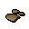
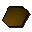

Clay

| Config name | clay |
| Item id | 434 |
| Weight | 1kg |
| Members | No |
| Tradeable | Yes |
| Stackable | No |
| Defined in | scripts/skill_mining/configs/ores.obj |
Clay
Some hard dry clay.
How to make
| Skill | Level | XP | Ingredients | Tool | How | Where | Makes |
|---|---|---|---|---|---|---|---|
| Mining | 1 | 5.0 | — | pickaxe | click it | rock | 1 |
Used to make
| Skill | Level | XP | Ingredients | Tool | How | Where | Makes |
|---|---|---|---|---|---|---|---|
| Crafting | 1 | Clay, | use on item |  Soft claywater: any of bowl_water, bucket_water, jug_water |
Dropped by
| NPC | Level | Quantity | Rarity | Via | Notes |
|---|---|---|---|---|---|
| 2 | 1 | 1/32 (3.12%) |
Quests
Witches House Doric's Quest Digsite
Referenced in scripts
scripts/_test/scripts/cheats/cheat_bank.rs2scripts/areas/area_alkharid/scripts/osman.rs2scripts/areas/area_draynor/scripts/lady_keli.rs2scripts/areas/area_draynor/scripts/leela.rs2scripts/drop tables/scripts/imp.rs2scripts/general_use/scripts/water_sources.rs2scripts/quests/quest_ball/scripts/witches_diary.rs2scripts/quests/quest_doric/scripts/doric_journal.rs2scripts/quests/quest_doric/scripts/quest_doric.rs2scripts/quests/quest_itexam/scripts/area_digsite.rs2scripts/skill_crafting/scripts/pottery/pottery.rs2scripts/skill_smithing/scripts/smelting/smelting.rs2